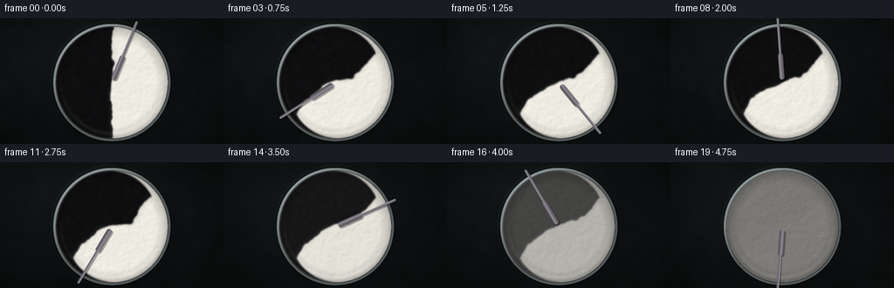
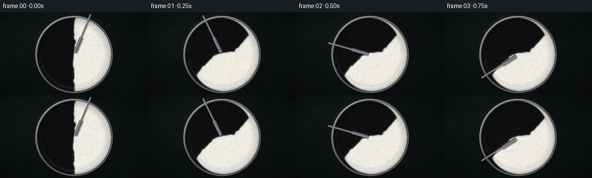
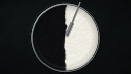
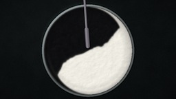
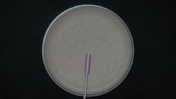

CODING AGENTS AS PIXEL WORLD MODELS
traex/DeepSeek-V4.1-Flash · material_0001
点击播放 · 原生 RGB 像素
逐轮保存的候选
回放视频、检查图与代码变化。
每份候选均可单独播放。实际图片检查记录在下方工具轨迹中。
候选 01播放与检查图
点击播放 · 原生 RGB 像素


展开代码变化
--- 上一保存版本
+++ 本次保存版本
@@ -0,0 +1,264 @@
+from pathlib import Path
+
+import numpy as np
+from PIL import Image
+from scipy import ndimage
+
+import artifact_io
+
+
+W, H = 640, 360
+OUT_W, OUT_H = 256, 144
+FRAMES = 20
+FPS = 4.0
+CASE_DIR = Path(__file__).resolve().parent
+
+
+def smoothstep(x):
+ x = np.clip(x, 0.0, 1.0)
+ return x * x * (3.0 - 2.0 * x)
+
+
+def fbm(rng, shape, octaves=5):
+ field = np.zeros(shape, dtype=np.float32)
+ amplitude = 1.0
+ total = 0.0
+ for octave in range(octaves):
+ base = rng.normal(size=shape).astype(np.float32)
+ base = ndimage.gaussian_filter(base, 2.0 ** (octaves - octave))
+ base /= max(np.std(base), 1e-6)
+ field += amplitude * base
+ total += amplitude
+ amplitude *= 0.52
+ return field / total
+
+
+def disk_coords():
+ yy, xx = np.mgrid[0:H, 0:W].astype(np.float32)
+ cx, cy = 0.5 * W, 0.51 * H
+ radius = 0.445 * H
+ x = (xx - cx) / radius
+ y = (yy - cy) / radius
+ return xx, yy, cx, cy, radius, x, y, np.sqrt(x * x + y * y)
+
+
+def make_background(rng):
+ yy, xx = np.mgrid[0:H, 0:W].astype(np.float32)
+ grain = fbm(rng, (H, W), 4)
+ fine = rng.normal(size=(H, W)).astype(np.float32)
+ fine = ndimage.gaussian_filter(fine, 0.65)
+ fine /= max(np.std(fine), 1e-6)
+ nx = (xx - 0.5 * W) / W
+ ny = (yy - 0.5 * H) / H
+ light = np.exp(-((nx + 0.23) ** 2 + (ny + 0.33) ** 2) / 0.24)
+ vignette = np.clip(1.15 - 0.75 * (nx * nx + ny * ny), 0.45, 1.05)
+ base = np.array([31.0, 38.0, 39.0], dtype=np.float32)
+ image = base[None, None, :] * (0.72 + 0.27 * light[..., None] + 0.055 * grain[..., None])
+ image += 1.5 * fine[..., None]
+ image *= vignette[..., None]
+ return np.clip(image, 0, 255)
+
+
+def make_initial_paint(rng):
+ _, _, _, _, _, x, y, r = disk_coords()
+ seam_noise = 0.035 * fbm(rng, (H, W), 4) + 0.010 * fbm(rng, (H, W), 3)
+ c = smoothstep((x - seam_noise) / 0.030 + 0.5)
+ # A slightly irregular edge reads as two freshly poured, equal dollops.
+ c += 0.06 * np.tanh(y * 8.0) * np.exp(-((x - seam_noise) / 0.055) ** 2)
+ c = np.clip(c, 0.0, 1.0)
+ c[r > 1.0] = 0.5
+ c += 0.5 - c[r <= 1.0].mean()
+ return np.clip(c, 0.0, 1.0)
+
+
+def velocity_field(x, y, r, t):
+ # Differential rotation winds the straight color boundary into a spiral.
+ omega = 4.05 * (1.02 - 0.25 * r * r)
+ ux = -omega * y
+ uy = omega * x
+
+ # Alternating off-center vortices create folds and torn marbling.
+ for k, (radius, speed, sign, phase, sigma) in enumerate(
+ [
+ (0.37, 1.65, 1.0, 0.2, 0.23),
+ (0.52, 1.35, -1.0, 2.35, 0.20),
+ (0.31, 1.15, 1.0, 4.1, 0.18),
+ ]
+ ):
+ angle = phase + speed * t + 0.42 * np.sin(0.9 * t + k)
+ vx, vy = radius * np.cos(angle), radius * np.sin(angle)
+ dx, dy = x - vx, y - vy
+ g = np.exp(-(dx * dx + dy * dy) / (2.0 * sigma * sigma))
+ ux += sign * 1.45 * (-dy) * g
+ uy += sign * 1.45 * dx * g
+
+ # Gentle radial breathing keeps the paint moving through the center.
+ pulse = 0.15 * np.sin(2.2 * t + 0.7) * (1.0 - r)
+ ux += pulse * x
+ uy += pulse * y
+
+ edge = smoothstep((1.0 - r) / 0.055)
+ return ux * edge, uy * edge
+
+
+def advect_and_mix(initial, progress):
+ c = initial.copy()
+ substeps = 5
+ dt = 0.25 / substeps
+ yy, xx = np.mgrid[0:H, 0:W].astype(np.float32)
+ _, _, _, _, _, x, y, r = disk_coords()
+ inside = r <= 1.0
+
+ for sub in range(substeps):
+ t = max(0.0, (progress - (substeps - sub) * dt) * 4.75)
+ ux, uy = velocity_field(x, y, r, t)
+ sample_x = xx - ux * dt * (0.5 * H)
+ sample_y = yy - uy * dt * (0.5 * H)
+ c = ndimage.map_coordinates(c, [sample_y, sample_x], order=1, mode="nearest")
+
+ # Local diffusion softens tiny folds while preserving broad paint ribbons.
+ blur = ndimage.gaussian_filter(c, 1.15)
+ c = 0.87 * c + 0.13 * blur
+ c[~inside] = 0.5
+
+ # Equal paint quantities are maintained as material approaches the rim.
+ c[inside] += 0.5 - c[inside].mean()
+ c = np.clip(c, 0.0, 1.0)
+
+ # The final part of the clip resolves the remaining marbling into one paint.
+ homogenize = smoothstep((progress - 0.68) / 0.32)
+ c = c * (1.0 - 0.985 * homogenize) + 0.5 * (0.985 * homogenize)
+ return c.astype(np.float32)
+
+
+def segment_distance(xx, yy, p0, p1):
+ px = xx - p0[0]
+ py = yy - p0[1]
+ vx, vy = p1[0] - p0[0], p1[1] - p0[1]
+ denom = vx * vx + vy * vy
+ q = np.clip((px * vx + py * vy) / denom, 0.0, 1.0)
+ dx = px - q * vx
+ dy = py - q * vy
+ return np.sqrt(dx * dx + dy * dy)
+
+
+def render_frame(c, rng, progress):
+ _, _, cx, cy, radius, x, y, r = disk_coords()
+ yy, xx = np.mgrid[0:H, 0:W].astype(np.float32)
+ inside = r <= 1.0
+
+ surface_noise = fbm(rng, (H, W), 4)
+ micro = fbm(rng, (H, W), 2)
+ c_soft = ndimage.gaussian_filter(c, 1.7)
+
+ black = np.array([15.0, 15.5, 17.0], dtype=np.float32)
+ white = np.array([244.0, 241.0, 232.0], dtype=np.float32)
+ base = black[None, None, :] * (1.0 - c_soft[..., None]) + white[None, None, :] * c_soft[..., None]
+
+ # Height and normal from paint ridges, with stronger relief at color boundaries.
+ boundary = 1.0 - np.minimum(c_soft, 1.0 - c_soft) * 2.0
+ height = 0.32 * surface_noise + 0.18 * micro + 0.18 * boundary
+ gy, gx = np.gradient(height)
+ nx, ny, nz = -1.7 * gx, -1.7 * gy, np.ones_like(height)
+ norm = np.sqrt(nx * nx + ny * ny + nz * nz)
+ nx, ny, nz = nx / norm, ny / norm, nz / norm
+ lx, ly, lz = -0.48, -0.58, 0.66
+ diffuse = np.clip(nx * lx + ny * ly + nz * lz, 0.0, 1.0)
+ diffuse = 0.82 + 0.24 * diffuse
+
+ hx, hy, hz = -0.35, -0.46, 0.82
+ ndoth = np.clip(nx * hx + ny * hy + nz * hz, 0.0, 1.0)
+ gloss = 0.22 + 0.48 * (1.0 - c_soft)
+ specular = gloss * (ndoth**35)
+
+ image = base * diffuse[..., None]
+ image += 225.0 * specular[..., None]
+
+ # Concave meniscus and a soft reflected edge along the lower rim.
+ meniscus = np.clip((r - 0.79) / 0.21, 0.0, 1.0)
+ image *= (1.0 - 0.20 * meniscus[..., None])
+ lower_glow = np.exp(-((r - 0.91) / 0.035) ** 2) * np.clip((y + 0.3) / 1.3, 0.0, 1.0)
+ image += 18.0 * lower_glow[..., None]
+
+ # Very fine paint texture prevents the broad color field from looking flat.
+ image += (micro[..., None] * 1.25)
+ image = np.clip(image, 0, 255)
+
+ background = make_background(rng)
+ out = background.copy()
+
+ # Cast shadow around the vessel.
+ shadow_d = np.sqrt((x + 0.025) ** 2 + (y + 0.035) ** 2)
+ shadow = 1.0 - smoothstep((shadow_d - 0.985) / 0.12)
+ out *= 0.58 + 0.42 * shadow[..., None]
+
+ out[inside] = image[inside]
+
+ # Brushed-steel rim, lit from upper left with dark bevels.
+ rim_width = 0.052
+ rim = (r > 1.0) & (r <= 1.0 + rim_width)
+ radial = np.clip((r - 1.0) / rim_width, 0.0, 1.0)
+ angle = np.arctan2(y, x)
+ rim_base = np.array([111.0, 120.0, 121.0], dtype=np.float32)
+ rim_light = 0.45 + 0.62 * np.clip(-0.55 * np.cos(angle) - 0.65 * np.sin(angle), 0.0, 1.0)
+ rim_light += 0.18 * np.sin(radial * np.pi)
+ rim_color = rim_base[None, None, :] * rim_light[..., None]
+ rim_color += (24.0 * np.sin(radial * np.pi)[..., None])
+ rim_color *= (0.70 + 0.30 * smoothstep(radial / 0.32))[..., None]
+ out[rim] = rim_color[rim]
+
+ outer = (r > 1.0 + rim_width) & (r <= 1.0 + rim_width + 0.018)
+ out[outer] = out[outer] * 0.42
+
+ # Stainless stirring spatula: wide blade near the center, narrow handle outward.
+ rod_angle = -1.18 - progress * np.pi * 5.1
+ ux, uy = np.cos(rod_angle), np.sin(rod_angle)
+ p0 = (cx + radius * 0.10 * ux, cy + radius * 0.10 * uy)
+ p1 = (cx + radius * 1.16 * ux, cy + radius * 1.16 * uy)
+ blade_end = (cx + radius * 0.48 * ux, cy + radius * 0.48 * uy)
+ d_blade = segment_distance(xx, yy, p0, blade_end)
+ d_handle = segment_distance(xx, yy, blade_end, p1)
+ d_shadow_b = segment_distance(xx - 3.2, yy - 3.6, p0, blade_end)
+ d_shadow_h = segment_distance(xx - 3.2, yy - 3.6, blade_end, p1)
+
+ rod_shadow = (1.0 - smoothstep((d_shadow_h - 2.1) / 2.4)) * 0.30
+ rod_shadow = np.maximum(rod_shadow, (1.0 - smoothstep((d_shadow_b - 6.8) / 3.0)) * 0.34)
+ out *= (1.0 - rod_shadow[..., None])
+
+ blade_alpha = 1.0 - smoothstep((d_blade - 6.2) / 2.3)
+ handle_alpha = 1.0 - smoothstep((d_handle - 2.7) / 1.8)
+ metal_alpha = np.maximum(blade_alpha, handle_alpha)
+
+ across = np.clip((xx - p0[0]) * (-uy) + (yy - p0[1]) * ux, -8.0, 8.0)
+ metal_shade = 0.68 + 0.36 * np.clip(1.0 - np.abs(across + 2.0) / 8.0, 0.0, 1.0)
+ metal_shade += 0.18 * np.exp(-((across + 2.3) / 1.1) ** 2)
+ metal = np.array([116.0, 125.0, 126.0], dtype=np.float32)[None, None, :] * metal_shade[..., None]
+ metal[..., 0] += 13.0
+ metal[..., 2] += 8.0
+ metal = np.clip(metal, 0, 255)
+ out = out * (1.0 - metal_alpha[..., None]) + metal * metal_alpha[..., None]
+
+ # Final color grade and fine sensor grain.
+ image8 = np.clip(out, 0, 255)
+ image8 = 255.0 * (image8 / 255.0) ** 1.035
+ noise = rng.normal(scale=0.85, size=(H, W, 1)).astype(np.float32)
+ image8 = np.clip(image8 + noise, 0, 255).astype(np.uint8)
+ return np.asarray(Image.fromarray(image8).resize((OUT_W, OUT_H), Image.Resampling.LANCZOS))
+
+
+def main():
+ rng = np.random.default_rng(20261111)
+ initial = make_initial_paint(rng)
+ frames = []
+ for index in range(FRAMES):
+ progress = index / (FRAMES - 1)
+ paint = initial if index == 0 else advect_and_mix(initial, progress)
+ frame = render_frame(paint, np.random.default_rng(9000 + index), progress)
+ frames.append(frame)
+ frames = np.stack(frames).astype(np.uint8)
+ artifact_io.save(frames, CASE_DIR)
+ print(f"wrote {len(frames)} frames to {CASE_DIR}")
+
+
+if __name__ == "__main__":
+ main()
可观测工具轨迹
实际执行的命令与返回图片。
命令 1exit 0
/bin/bash -c "pwd && rg --files -g '"'!*__pycache__*'"' | sed -n '1,200p'"
命令 2exit 0
/bin/bash -c "cat prompt.txt && printf '\\n--- RULES ---\\n' && cat GENERATION_RULES.md && printf '\\n--- SPEC ---\\n' && cat task_spec.json"
命令 3exit 0
/bin/bash -c "find . -maxdepth 2 -type f -printf '%p %s bytes\\n' | sort | sed -n '1,200p'"
命令 4exit 0
/bin/bash -c "sed -n '1,240p' artifact_io.py"
命令 5exit 0
/bin/bash -c "sed -n '1,220p' player_template.html"
命令 6exit 0
/bin/bash -c "python - <<'PY' import importlib.util for m in ['numpy','PIL','cv2','scipy','imageio','matplotlib']: print(m, bool(importlib.util.find_spec(m))) PY"
命令 7exit 1
/bin/bash -c 'python generate.py'
命令 8exit 0
/bin/bash -c 'python generate.py'
命令 9exit 0
/bin/bash -c "python - <<'PY'
from pathlib import Path
import json
import numpy as np
from PIL import Image
case = Path('.')
spec = json.loads((case/'task_spec.json').read_text())
z = np.load(case/'pixels.npz')['pixels']
assert z.shape == (spec['height'], spec['width'], spec['frames']), z.shape
frames = np.stack([(z[:,:,i,None] >> np.array([16,8,0])) & 255 for i in range(z.shape[2])]).astype(np.uint8)
assert frames.shape == (spec['frames'], spec['height'], spec['width'], 3)
assert np.isfinite(frames).all()
# Circular bowl interior center and mask, for paint statistics.
yy, xx = np.mgrid[0:spec['height'], 0:spec['width']]
mask = ((xx - 128) / 64) ** 2 + ((yy - 73) / 64) ** 2 < 0.80 ** 2
means = frames[:, mask].mean(axis=1)
stds = frames[:, mask].std(axis=1)
diffs = np.abs(np.diff(frames.astype(np.int16), axis=0)).mean(axis=(1,2,3))
print('frames:', frames.shape)
print('interior means:', np.round(means, 1).tolist())
print('interior std:', np.round(stds, 1).tolist())
print('mean adjacent frame delta:', round(float(diffs.mean()), 3), 'min/max:', round(float(diffs.min()), 3), round(float(diffs.max()), 3))
print('first/last luminance:', round(float(frames[0].mean()), 2), round(float(frames[-1].mean()), 2))
for p in ['pixels.npz','inspection.png','transition_check.png','index.html']:
assert (case/p).exists() and (case/p).stat().st_size > 0, p
print('artifacts: ok')
PY"视觉工具实际返回图片 1

视觉工具实际返回图片 2

视觉工具实际返回图片 3

视觉工具实际返回图片 4

保存候选 1 份；完成命令 9 次；可验证图片返回 4 张。原始 API 响应与完整日志保留在本地。